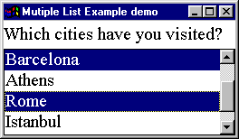

The List example -
multiple choice

The constructor for this example differs only in the use of the alternative constructor which allows the single/ multiple choice attribute to be specified upon construction.
0025 cityList = new List( 4, true);
The itemStateChanged() action also differs by obtaining the list of
selected items as an array of Strings and outputting them, or a message
if none are selected.
0043 public void itemStateChanged( ItemEvent event) {
0044
0045 List theList = (List) event.getItemSelectable();
0046 String visited[] = theList.getSelectedItems();
0047
0048 if ( visited.length == 0) {
0049 System.out.println( "No items are now selected!");
0050 } else {
0051 for ( int index = 0; index < visited.length; index++) {
0052 System.out.print( visited[ index] + " ");
0053 } // End for.
0054 System.out.println();
0055 } // End if.
0056 } // End itemStateChanged.
The output produced on the console when this applet was interacted with might be as follows.
Barcelona
Barcelona Istanbul
Barcelona Athens Istanbul
Barcelona Istanbul
Barcelona
No items are now selected!
This link should only be followed if your browser is
capable of running Java 1.1 applets.
There is no back link on this page.
 The Multiple List Example Applet
The Multiple List Example Applet
.